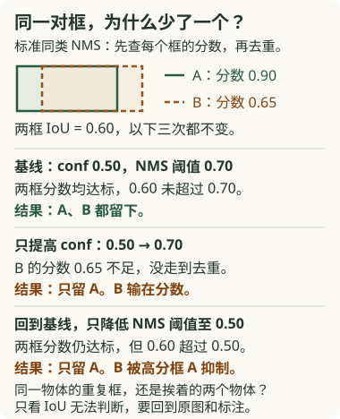

01.1 整个类别都检不出来
先查标签，不先换模型。找几张确定含这个类别的图，关掉随机增强，将原标注、格式转换后的标注、DataLoader 输出的框和类别名逐一画回对应图像。核对类别 ID 的映射及每一步的实例数。
验收 训练实际看到的框和类别都正确，再看该类召回率。已在读取时丢失的标注，不会由 SimOTA 自动补回。
主线④ 训练监督 / 主线⑥ 精度与效率
漏了目标，先找框在哪一步消失；训练异常，先看模型实际收到的监督；推理慢，先量时间花在哪一段。
点线词可以悬停查看、点按固定，或用 Tab 聚焦、Esc 关闭。各条末尾给出验证改动是否有效的指标。
每题先说第一步，再说什么证据会改变你的判断。答完后可跳到对应案例核对。
01 / 检测效果
固定同一批漏检图，临时降低置信度门槛，查看 NMS 前经过框解码的候选框。普通预测接口给出的往往是过滤后的结果；诊断时需要保留后处理前的输出。有好框却没留下，先查打分和去重；没有好框，再查数据、分辨率和训练。
先查标签，不先换模型。找几张确定含这个类别的图，关掉随机增强，将原标注、格式转换后的标注、DataLoader 输出的框和类别名逐一画回对应图像。核对类别 ID 的映射及每一步的实例数。
验收 训练实际看到的框和类别都正确，再看该类召回率。已在读取时丢失的标注，不会由 SimOTA 自动补回。
先调推理阈值 conf。在验证集降低 conf，记录新增的真目标和误报。如果满足现场要求，可以不重训。若真缺陷与正常反光的分数大量重叠，继续降阈值只会把两者一起放进来。
验收 在同一误报预算下比较关键缺陷召回率，而不是只展示一张成功图片。
先区分重复框和相邻真目标，调整方向正好相反。同一物体重复报框，可降低 NMS IoU 阈值，使抑制更强；若两个真实物体各自的框都在 NMS 前存在，却在 NMS 后少了一个，可提高该阈值。若之前就少一个，调它无效。这里指常规带 NMS 的检测；免 NMS 模式不套用此规则。

验收 在重复框样本和拥挤样本上分别数多报、少报，不能只看保留框总数。
把网络实际吃到的图放大看。若原图清楚，但缩到 640 后划痕短边只剩一两个像素，先单独比较提高输入尺寸 imgsz 或裁出产品 ROI 后检测。原图本身就分不出缺陷时，优先检查对焦、光照和采样分辨率。
验收 同时记录细缺陷召回率和端到端延迟；用 ROI 还要确认边缘目标没被裁掉。
补最像缺陷的正常样本。排除漏标后，把反复触发误报的正常反光、接缝作为困难负样本加入训练；同时保留长相接近的真缺陷。提高 conf 可作临时对照，但可能一并滤掉弱缺陷。
验收 在未参与训练的照片上，同时看每百张正常图的误报数和真实缺陷召回率。
AP50 尚可、AP75 偏低提示定位值得查，不等于已确定原因。将框叠回原图，查缩放、补边和坐标还原；再看不同标注人对细长缺陷的边界是否一致。几何链路正确后，再单独试更高分辨率或框回归损失权重。NMS 不会修正框的位置。
验收 比较同一批细长框的偏移和 AP75，而不只看 AP50。
02 / 训练曲线
不要仅凭 loss 停训，也不要立即增大 weight_decay。loss 衡量训练目标的误差；AP 衡量按分数排序的预测，在规定 IoU 下能否正确检出。少数样本的损失变大，并不妨碍更多真目标排到前面。先保留表现最好的权重。
选哪一轮 如果上线要求是“每百张正常图最多误报几次”，就在同一误报预算下，选关键缺陷召回率最高的那轮；总 mAP 只作参考。
排除坏框和异常输入后，再降低初始学习率，或单独延长 warmup。若只在混合精度时出现 NaN，用同一批数据短跑一次 FP32，区分数值溢出和训练设置问题。
验收 同一段训练不再出现非有限值，loss 能稳定下降。初始学习率和衰减速度不要同时改。
先做小样本拟合测试。取几十张标注干净的图，暂时关闭强增强，检查能否把这几十张学好。连这批图也学不好，先查标签、意外冻结的层、实际学习率和损失实现；学得好，再回全量数据比较采样、训练轮数或模型容量。
验收 先在这几十张训练图上看实际预测与标签能否对齐。这里故意让模型记住它们，不拿这次结果证明泛化。
保留早、中、后期权重，在相同验证图和判定口径下比较。把每轮召回写成“检出数 / 应检数”。示例：组内仅有 20 处细划痕，少检 1 处就会下降 5 个百分点。回看具体漏掉哪几处，比较连续几轮和不同光照分组。若只是少数样本的分数在阈值附近来回变动，可补充独立样本复核；若训练表现继续改善，相近场景的验证样本却连续多轮退化，过拟合的判断才更有依据。
选哪一轮 在验证集按同一误报预算比较候选权重，优先选关键缺陷召回稳定、正常光照也满足要求的轮次。锁定权重和阈值后，再用独立现场样本确认。若退化集中在某台相机或某种照明，查对应样本覆盖；若多类场景都退化，再分别比较早停、数据增强或正则化。
查看增强后的真实输入。Mosaic 的拼图缩放可能让细划痕变得太小；MixUp 的叠图可能把弱缺陷的对比度冲淡。一次只减弱一种增强，或比较在训练末段关闭它的效果。
证据边界 YOLOX 论文的一组消融中，强增强组合使 COCO AP 从 39.6 升到 42.0，作者在最后 15 轮关闭 Mosaic 和 MixUp。这个结果不能拆成某一种增强的独立收益，也不能直接套用到缺陷数据。看原论文表 2
用真实低光样张确定压暗范围，再对训练图做单变量实验。保留原配置作对照，实验组只改变亮度扰动的范围。两组使用相同的训练划分、起始权重和训练轮数。有划痕和无划痕的训练图按同一规则处理，抽看送入模型的增强图，确认标出的划痕仍可辨认。只压暗正样本，模型就可能把暗背景当成缺陷线索。
验收 在同一批真实留出图上，以相同的每百张正常图误报数比较低光细划痕召回，同时检查正常光照组是否退步。在合成暗图上变好，只说明模型适应了这种变换。若真实暗图仍差，回看噪声、模糊等现场因素。
03 / 推理速度
固定硬件、输入尺寸、batch 和数值精度，预热后分段测量。GPU 异步执行：单测 GPU 前向用 CUDA Event 或正确同步；端到端延迟则从收到输入量到结果可用。若包含网络传输或排队，也写清是否计入。
先试后端与数值精度。在支持的 GPU 上，把现有后端与 TensorRT FP16 跑在同一批输入上；若要区分两者的贡献，分开比较后端和精度。仍不达标再试小一档的模型或降低 imgsz。以细缺陷为主时，不要先牺牲输入细节。尝试 INT8 时，用有代表性的校准数据并复核精度。
验收 前向耗时、端到端延迟和关键缺陷召回率一起看，不能只报告最快一次。
优化耗时最长的实际环节。解码慢就改解码；CPU 与 GPU 来回传输慢就减拷贝；NMS 慢就查输入候选数。若后面还接 SORT 与业务规则，把两段另行计时。成功导出 ONNX 只说明模型换了表示格式，不代表链路已经变快。评估免 NMS 模型时，先量旧链路花在 NMS 上的时间，再用同一批输入复测新模型的前向、后处理和整条链。
验收 在同一硬件和负载下比较收到图像到得到告警的时间，检查 P95，而不只看模型平均毫秒数；换模型还要在同一误报预算下复核关键缺陷召回率。
试小批量推理，或让预处理和 GPU 前向并行。批量可能提高每秒处理张数，但要等图片凑齐。对实时请求，不能只比较整批耗时除以张数。
验收 用接近现场的请求节奏，比较稳定吞吐量和包含排队的单请求 P95。
只有单路串行、逐张处理时，才可以这样换算平均耗时。举例：一个 batch 有 4 张图，从整批开始到结果一共 60 ms，若一直有图可处理，这段的吞吐量约为 4 ÷ 0.060 ≈ 67 张/秒；每张随整批在约 60 ms 后得到结果，还没算凑批时间。15 ms 是摊到每张的计算时间，不是单张响应延迟。
验收 50 张/秒若是系统吞吐目标，就看持续完成量；若还要求每张在 20 ms 内返回，另外验证响应延迟，不能用 FPS 代替。
依据 / 复盘
个人原稿：《YOLOX 调参经验 3.1》记录了 VisDrone 转 VOC 与本地读取过程中漏掉部分标注，也记录了多组学习率与衰减调整。修数据和改衰减曾同时发生，不据此宣称某个参数带来确定涨幅。
Ultralytics 验证指标解释 AP 与召回；预测参数说明可核对 conf、iou 与免 NMS 的适用范围。NVIDIA 性能测量指南区分引擎、具体算子和整条链的性能。
模拟题中的低光划痕与训练轮数用于练习实验设计。Ultralytics 数据增强说明可查明度扰动的参数；Google 数据集划分说明解释如何分开挑选模型与最终复核；Ultralytics 端到端检测说明列出免 NMS 的适用路径。